А САЛО РУССКОЕ ЕДЯТ!
Как извлечь пользу из ЖЖ
Для нас, поколения местных иллюстраторов, которое я представляю, трудно переоценить значение сервиса livejournal и сообщества в частности (собственно, историю этого самого поколения, если кому придет в голову, можно отсчитывать от февраля 2002, когда иллюстраторы Максимов и Ловчев сообщество зарегистрировали) как трудно переоценить для общего творческого роста общение между художниками как таковое. Мы, в этом смысле, находимся в гораздо более выгодном положении, чем любое из предыдущих поколений. Во-первых, отпала необходимость тратить время и деньги на такую хлопотную вещь, как выставка, служившую раньше едва ли не главным средством культурного обмена. Нынче все можно посмотреть и со всеми пообщаться, не отлипая от кресла. Трудно сказать, хорошо это в общем зачете или нет, но, во-вторых, общаться и обмениваться вдохновением теперь буквально общаться со всем миром. illustration mundo, именно что.
Это особенно важно потому, что до зарубежных образцов нам тянуться и тянуться. Я не хочу показаться иностраннофилом и не стану кокетничать (от лица поколения): мы многое можем, мы прекрасные, я нас обожаю. Но чего нам точно занимать за границей — Это легкость, ненатужность, способность, так сказать, дышать мозгом. Одно из тех качеств, которое либо есть, либо его нет, и как ей учиться, непонятно. Видимо, простым причащением.
Так вот, возвращаясь к сервису livejournal, раз уж он так популярен в нащих краях, а с RSS разобрались еще не все, то вот вам. Кто-то, я слыхал, до сих пор считает, что только в наших краях им пользуются интеллектуалы и виайпи, а за границей это прибежище тинейджеров и готих. Однако там встречаются даже и именно очень важные иллюстраторы.
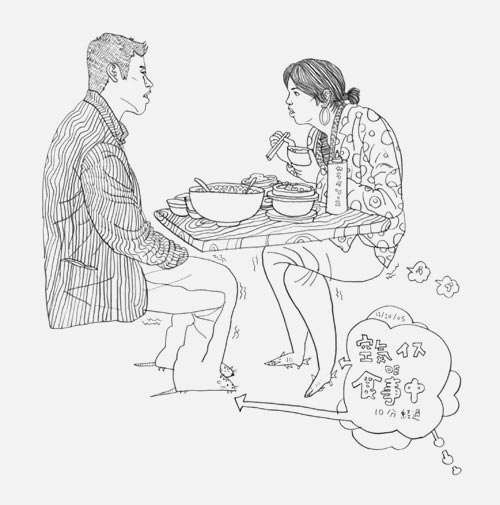
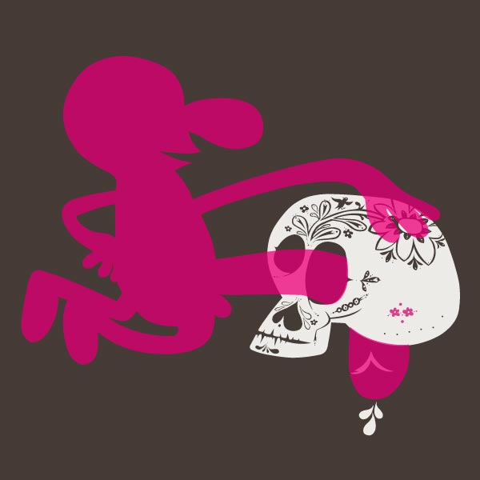
http://littlefriends.livejournal.com
А также - во множестве - просто приятные (а также неприятные) художники, профессионалы и студенты, в общем, кто ищет, тот найдет.
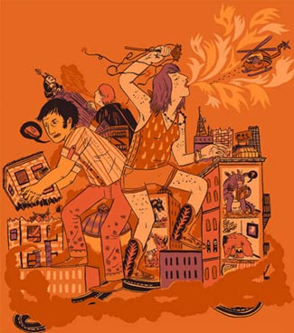
Michael Deforge навсегда
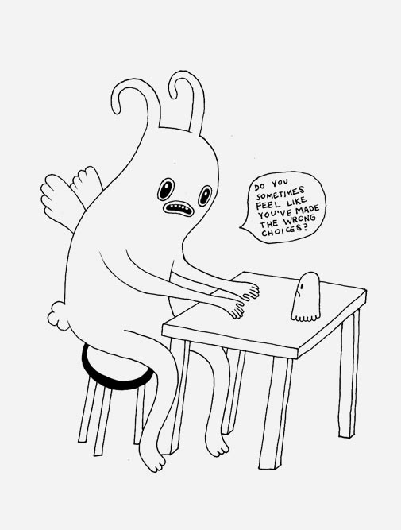
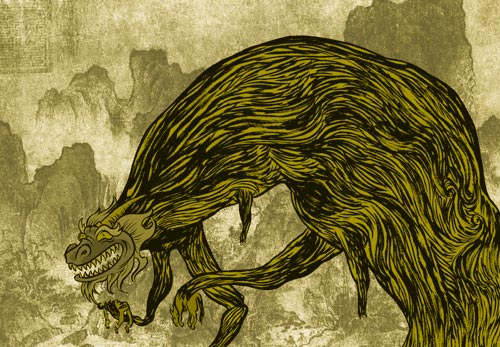
http://oneofthejohns.livejournal.com
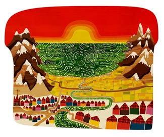
http://rebel-abrahams.livejournal.com
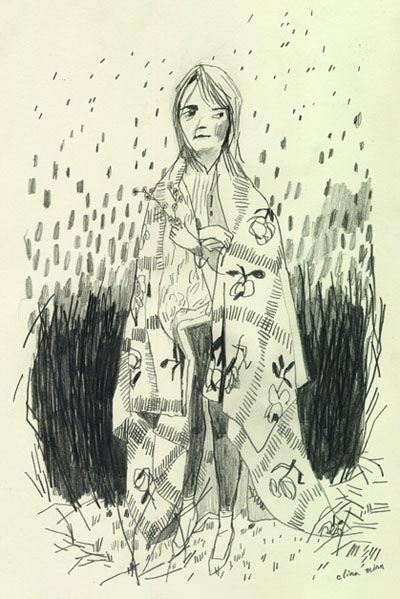
http://slowbicycle.livejournal.com
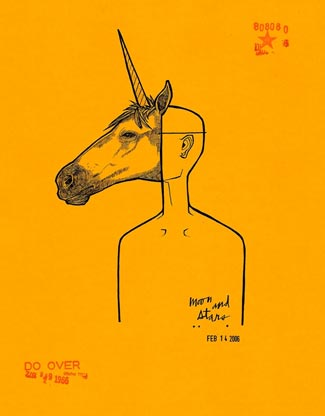
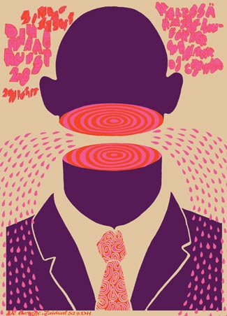
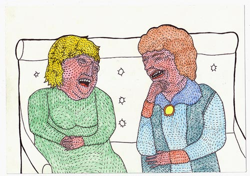
http://seabear.livejournal.com
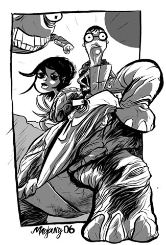
http://paulmay.livejournal.com
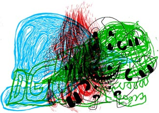
http://seripop.livejournal.com/?skip=40
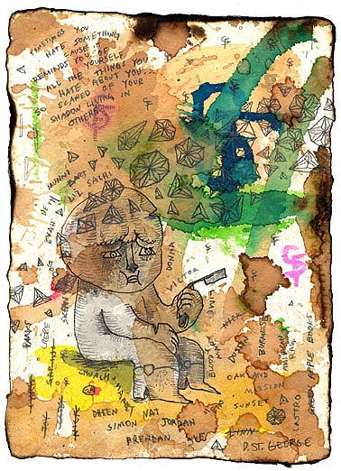
http://azstar78.livejournal.com
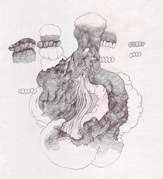
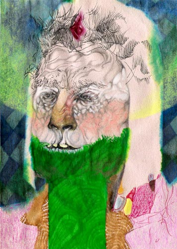
http://gubia.livejournal.com (отдельное спасибо за множественные наводки)
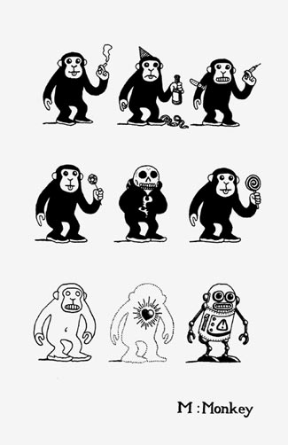
stateofthings.livejournal.com (этот, впрочем, говорит по-русски)
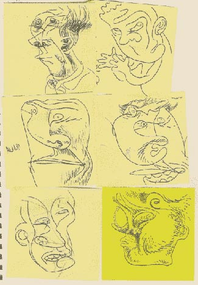
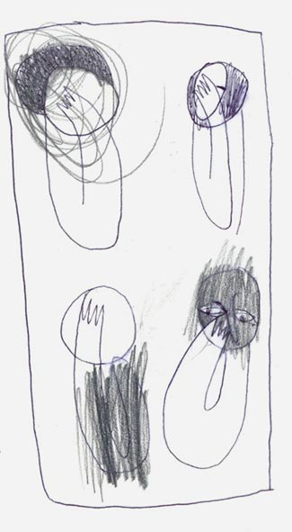
tigermilkshake.livejournal.com
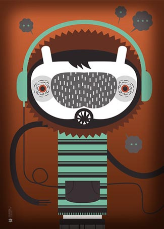
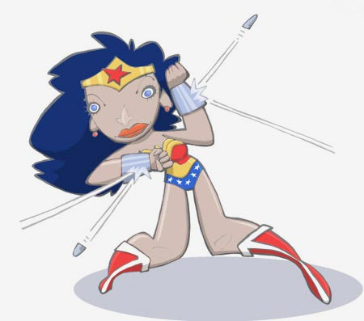
http://pickled_jo.livejournal.com
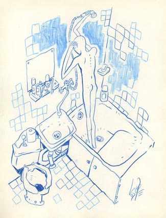
И еще один юзер из местных, только что увидел.